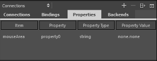

Specifying Dynamic Properties
You can bind object properties to dynamic expressions to define global properties for an object that can be read by other objects. For example, you can specify global properties for the root object that you can use in the child objects.
You can specify dynamic properties for objects in the Connections view.

To specify dynamic properties for an object:
- In the Connections view, select the Properties tab.
- Select the
 (Add) button to add a dynamic property for the currently selected item. The item ID is displayed in the Item column.
(Add) button to add a dynamic property for the currently selected item. The item ID is displayed in the Item column. - Double-click the value in the Property column to give a name to the property.
- Double-click the value in the Property Type column to specify the type of the property.
- Double-click the value in the Property Value column to specify the value of the property.